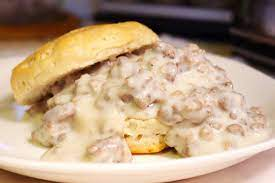

Description
Super easy Sausage Gravy and Biscuit recipes that will only take you 15 minutes to prepare and serve!
Ingredients
- 1 (16 ounce) can refrigerated jumbo buttermilk biscuits
- 1 (9.6 ounce) package of ground pork
- 1/4 cup flour
- 2 1/2 cups milk
- Salt and ground black pepper to taste
Directions
- Bake biscuits according to package instructions
- Meanwhile, cook sausage in large skillet over medium
heat 5-6 minutes or until thoroughly heated, stirring
frequently. Stir in flour. Gradually add milk; cooked
untilmixture comes to a boil and thickens, stirring
constantly. Reduce heat to medium-low; simmer 2
minutes, stirring constantly. Season to taste with Salt
and pepper.
- Split biscuits in half. Place two halves on each of plates;
top with about 1/3 cup of gravy. Enjoy!